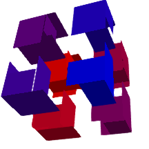

Makie v0.22.2
Makie 0.22.2 is finally here and introduces many fixes and improvements.
Cleanup Patterns/Hatching
We've enhanced pattern support by adding tests and fixing various issues along the way. Patterns should now work more consistently across different plot types and backends. Additionally, we've improved line rendering for LinePattern and anchored patterns to plot coordinates for better visual quality.
If you're not yet familiar with patterns, you can now learn more about them, along with other texture-like color options in the updated color documentation.

Nudge Axis3 clip planes to avoid clipping at 0 margin
When we updated Axis3 to feature zooming and translation controls we also added clipping at the axis boundary. If a plot element sits right at the boundary, e.g. due to setting margins to 0, they would sometimes get clipped and sometimes not. To avoid this, we moved the clip planes slightly outside the axis. As noted below we also added the option to completely turn off clipping in a separate pull request.
| v0.22 | v0.22.2 |
|---|---|
 |
Added a tutorial on creating an inset plot
Introduced a tutorial explaining how to create inset plots. Mention the zoom_lines function from MakieExtras.jl for connecting inset plots.

Add documentation on mesh normal generation
Documented how vertex order affects normal generation in mesh plots, providing clarity on how different vertex arrangements can impact plot appearance.

Cleanup volume
We addressed discrepancies in volume plot algorithms between GLMakie and WGLMakie and added more detailed documentation and tests for volume rendering. We fixed an issue with :mip truncating values at 0, fixed RGBA algorithms not accepting RGBA data and connected the absorption keyword to :absorptionrgba and :indexedabsorption. 

Improve nan handling in surface plots
We improved handling of NaN values in surface plots, ensuring consistency across different backends and updated reference images to reflect these changes. Specifically we are now treating NaNs in positions as invalid data, resulting in the relevant vertices being cut instead of defaulting to 0.
| v0.22 | v0.22.2 |
|---|---|
 |  |
DPI metadata for png
Added DPI metadata to PNG files, allowing external applications to interpret and display images at the correct size specified by their pxperunit setting.

Voxel improvements
In #4758 we changed how textures are handled by voxels. They now rely on uv_transform instead of uvmap which gives you further control about texture coordinates. For example, it allows you to rotate the texture. The texture coordinates generated for the different voxel sides have changed to be more consistent with expectation, see the texture mapping documentation. We also adjusted texture coordinates to scale with gap so that voxels remain fully covered by the texture they are assigned.
Beyond that we have some smaller fixes:
Fixed an issue with voxels not rendering on linux with firefox #4756.
Fixed an issue causing voxel planes to shift when using
rotate!(plot, ...)#4824Fixed
uv_transform = :rotr90and:rotl90being swapped #4758
| v0.22 | v0.22.2 |
|---|---|
|  |  |
Curvilinear contourf
Enabled curvilinear contourf plots by allowing contour calculations to be dispatched on and transforming Isoband output using bilinear interpolation.

Fix broken voronoiplot for clipped tessellations
Resolved an issue with voronoiplot to work correctly with clipped tessellations and automatic color generation which was previously causing errors.
Add option to turn off clipping
We introduced a feature that allows users to disable clipping in Axis3 by setting ax.clip[] = false. Note that you could already do this on a per-plot basis by overwriting the clip = Plane3f[] attribute when creating a plot.
Resolve :data space when deciding whether to connect transformations
When a plot is created its transformations, i.e. the transform_func (for example the log transform of an Axis) and model transformations (as set by scale!(), rotate!() and translate!()) are inherited from its parent based on whether their space is compatible. This only used to check the direct parent, which created a problem when space = :data represented pixel, clip or relative space through a pixel, empty or relative camera. We now trace the space up to the parent scene to resolve this issue.
Improvements for Slider updates
Added options to slider updates, including update_while_dragging and throttle, and introduced lowres_background to the Resampler to optimize performance when updating heatmap(Resampler(data)) often.
Internal fixes for (W)GLMakie
Fix rare shader compilation error#4755
Upgrade to threejs 0.173, fixing a rare problem with NaNs in buffers
Fix WGLMakie nan error in cut plane, which broke Axis3 #4772
fix UInt underflow in line indices #4782
Allow higher dimensional geometries in poly
Restored support for rendering higher-dimensional geometries with the poly() function, enabling 3D shape visualization as a mesh with outlines.
allow setting inspectable in the theme
Enabled setting the inspectable attribute within themes, allowing for theme-wide customization of inspectability options across plots.
Allow Block.attri... to autocomplete
We added support for autocompletion for attributes on Block types. This allows you to tab-complete attributes while looking for documentation, e.g. ?Axis.xl will complete to ?Axis.xlabel.
Consider visible in PolarAxis protrusions
Fixed an issue where PolarAxis protrusions did not consider visibility states, e.g. due to being hidden by hidedecorations!(ax).
Widget optimizations
Optimized widget updates by reducing redundant updates, and by removing pick() usage where possible. This solves a rare issue, where Textfield would stop working on a server with higher latency.
Fix WGLMakie tick and window_open events
We fixed an issue causing tick events to not be spawned in WGLMakie and connected the window_open event. This also fixes issues with animated Widgets, e.g. Toggle not working in WGLMakie.